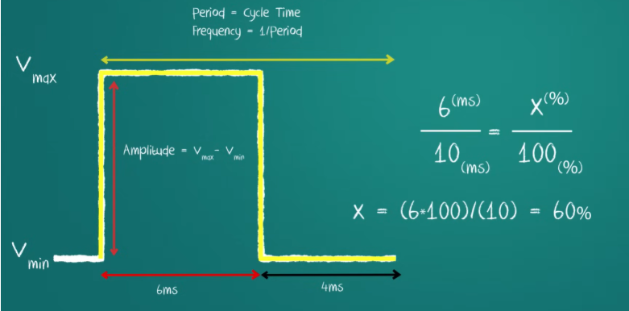
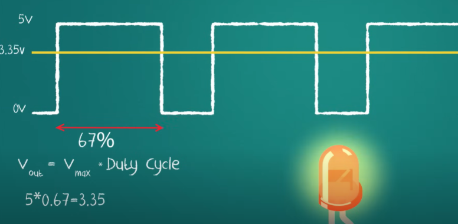

KHÁI QUÁT SƠ ĐỒ PWM
PWM (Pulse Width Modulation) là phương pháp điều chỉnh độ rộng xung để giả lập điện áp analog. Dưới đây là các thông số cơ bản:

Sơ đồ mô tả chu kỳ (Period), tần số (Frequency) và biên độ (Amplitude) của xung PWM.
THỰC HÀNH VÀ CÔNG THỨC
Để tính toán điện áp đầu ra trung bình (Vout), chúng ta căn cứ vào Duty Cycle (Chu kỳ nhiệm vụ):

Ví dụ: Với Duty Cycle 67% và Vmax 5V, điện áp đầu ra xấp xỉ 3.35V.
Công thức tính: Vout = Vmax * Duty Cycle
Ví dụ: 5V * 0.67 = 3.35V